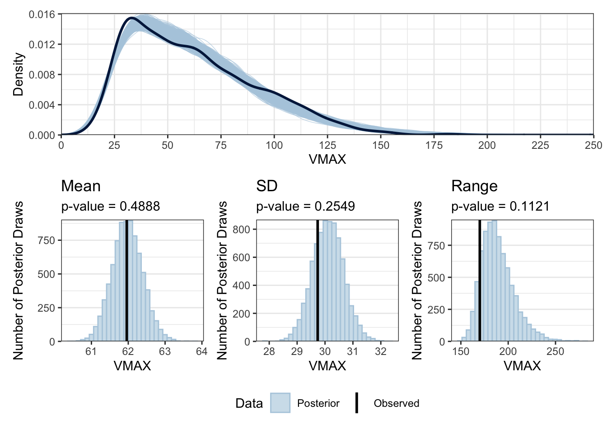
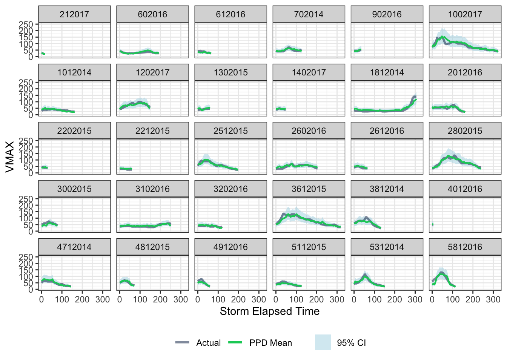
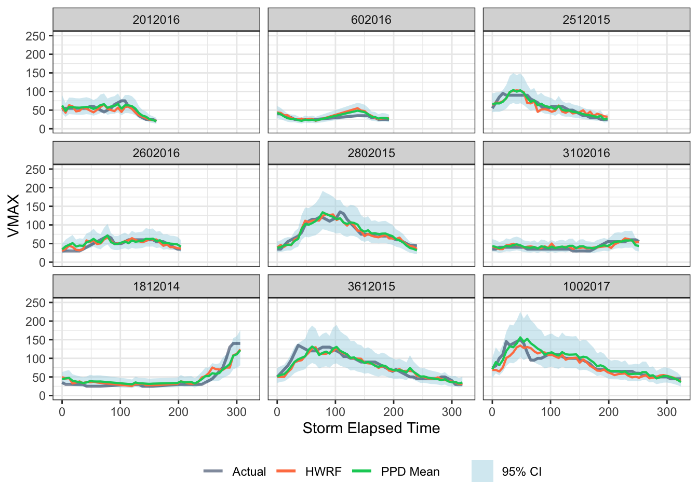

| Model | waic1 | p_waic2 | elpd_waic3 | elpd_diff4 | se_diff5 |
|---|---|---|---|---|---|
| 1 WAIC (waic): Widely Applicable Information Criterion, a model selection metric balancing fit and complexity. Lower values indicate better expected predictive accuracy. | |||||
| 2 Effective Parameters (p_waic): An estimate of the number of effective parameters in the model; higher values indicate more flexibility. | |||||
| 3 ELPD (elpd_waic): Expected log predictive density, quantifying out-of-sample predictive performance. Higher (less negative) values indicate better predictive accuracy. | |||||
| 4 ELPD Difference (elpd_diff): The difference in elpd_waic relative to the best model (logNormal_Rand_Fit). The best model always has elpd_diff = 0. | |||||
| 5 SE of Difference (se_diff): The standard error of elpd_diff, measuring uncertainty in the difference estimates. Large absolute elpd_diff values relative to se_diff indicate meaningful performance differences. | |||||
This study evaluates 24-hour ahead hurricane intensity forecasts, assessing whether additional state variables improve predictions beyond the HWRF model alone.
📌 Key highlights:
- Bayesian modeling of maximum wind speed (VMAX)
- Feature importance analysis of key hurricane predictors
- Improved accuracy over existing forecasts
Introduction
The data for this analysis are from A Feed Forward Neural Network Based on Model Output Statistics for Short-Term Hurricane Intensity Prediction, with detailed variable descriptions available here. This paper uses deep learning to improve 24-hour ahead forecasts of hurricane intensity (maximum wind velocity, VMAX).
The primary prediction model, HWRF, which is a mathematical weather prediction model based on differential equations. In addition to the forecast, HWRF has many other state variables such as sea surface temperature, longitude, time of year, etc, that are usually discarded.
This analysis aims to assess whether incorporating these HWRF state variables can enhance the accuracy of hurricane intensity predictions
Data Exploration (Shiny App)
To facilitate exploratory analysis, I developed an interactive Hurricane Analysis app. This tool enables the visualization of key variables and their relationships with VMAX:
- The Histogram plot reveals that VMAX exhibits positive right-skewed distribution.
- The Map feature illustrates the geographic influence of spatial variables like basin, land presence, latitude, and longitude.
- Scatter plots of VMAX against potential predictors highlight the importance of feature transformations for model fitting.
Model Description
The response variable \(Y_i\) is the observed VMAX for each hurricane observation. The dataset consists of \(i = 1, ..., n = 1705\) total observations from 87 unique storms, where each storm is identified by a StormID (\(S_i\)). Every observation is associated with \(p = 20\) covariates (\(X_{ij}\), where \(j = 1, ..., p\)) that capture key spatial characteristics, environmental conditions, and forecast-based features relevant to hurricane intensity.
Observations are recorded at 6-hour intervals, representing StormElapsedTime. However, some storms have missing increments, making the time sequence irregular. StormElapsedTime was not included as a predictor in the model because the HWRF model already accounts for time evolution through its differential equation framework.
To ensure comparability across variables, all covariates underwent the following preprocessing steps:
- Arcsinh transformation was applied to handle skewed distributions.
- Centering and scaling were performed to standardize the variables.
Given the positive right-skewed distribution of VMAX, two likelihood functions were considered:
Log-normal
\[ \begin{aligned} Y_{i} &\sim \text{LogNormal}(\mu_i, \sigma^2) \\ \mu_i &= \beta_{0} + \sum_{j=1}^{p}X_{ij}\beta_{j} + \theta_{S_i} \\ \theta_{S_i} &\sim \text{Normal}(0, \tau^2) \end{aligned} \]
Gamma
\[ \begin{aligned} Y_{i} &\sim \text{Gamma}(\alpha, \alpha/\mu_i) \\ log(\mu_i) &= \beta_{0} + \sum_{j=1}^{p}X_{ij}\beta_{j} + \theta_{S_i} \\ \theta_{S_i} &\sim \text{Normal}(0, \tau^2) \end{aligned} \]
where \(\beta_{j}\) is the effect of covariate \(j\) with weakly informative priors \(\beta_j \sim \text{Normal}(0,5)\). We set a weakly prior on \(\alpha \sim \text{InvGamma}(0.1, 0.1)\). In the random effects models, we set weakly priors \(\tau \sim \text{InvGamma}(0.1, 0.1)\), otherwise \(\theta_{S_i} = 0\).
Model Comparisons
All four models were fit to the data and assessed for convergence to ensure reliable parameter estimates. After confirming convergence, model selection was performed using the Widely Applicable Information Criterion (WAIC) and Expected Log Predictive Density (ELPD), both of which estimates out-of-sample predictive accuracy. Table 1 presents the WAIC values along with associated parameters for each model:
Based on WAIC and elpd_diff, the Log-normal model with random effects demonstrated the best overall predictive performance. This decision was supported by the following observations:
- Lowest WAIC & Best Predictive Performance: The log-normal random effects model had the smallest WAIC and elpd_diff = 0, meaning no other model demonstrated better expected predictive accuracy.
- Better Likelihood Choice: Both Log-normal models outperformed their Gamma counterparts, suggesting that a log-normal likelihood is better suited for modeling VMAX.
- Importance of Random Effects: The random effects models consistently had lower elpd_diff values than their fixed-effects counterparts, reinforcing the need for a random intercept for StormID. For example, the fixed-effects log-normal model had elpd_diff = -69.03, showing a substantial decrease in predictive performance compared to the selected model.
Model Refinement
After selecting the Log-normal model with random effects, additional refinements were made to improve model interpretability and predictive performance. The refinement process followed two key steps:
Addressing Multicollinearity
- Covariates with high variance inflation factors (VIF) were identified and removed to reduce multicollinearity, ensuring stable parameter estimates.
- TCOND7002, INST2, and SHTFL2 exhibited high VIF values and were removed before refitting the model.
Iterative Variable Selection
- To improve model parsimony, variables were removed one at a time, with the model iteratively refit after each removal.
- This process continued until the 95% credible intervals of all remaining covariates no longer contained 0, ensuring that only statistically meaningful predictors were retained.
Final Model
After refinement, the final model retained \(p = 9\) covariates:
- Land
- Wind Shear Magnitude (SHR_MAG)
- Relative Humidity (RHLO)
- Convective Available Potential Energy (CAPE3)
- Coupling Parameter 1 (CP1)
- Total Condensate Symmetry Parameter (TCONDSYM2)
- Coupling CP3 Parameter (COUPLSYM3)
- HWFI forecast
- HWRF forecast
This final model strikes a balance between parsimony and predictive power, ensuring that only the most relevant predictors are retained while minimizing unnecessary complexity. By including variables that significantly contribute to explaining variations in VMAX, the refined model improves both interpretability and generalizability for forecasting hurricane intensity.
Goodness of Fit
To assess the model’s goodness of fit, posterior predictive checks (PPCs) were performed by drawing samples from the posterior predictive distribution (PPD). These checks compare key summary statistics of the observed data to those generated from the model, ensuring that the fitted model can replicate important characteristics of the data.
The figure below displays the empirical distribution of observed VMAX alongside the posterior predictive distribution, as well as Bayesian p-values for the mean, standard deviation (SD), and range:

These p-values fall within an acceptable range, staying sufficiently away from 0 and 1, indicating that the model does not systematically overestimate or underestimate variability in the data. Additionally, the empirical distribution of observed VMAX aligns well with the simulated distributions from the PPD draws, further supporting model adequacy.
Overall, the PPCs confirm that the model provides a reasonable fit to the observed data and successfully captures key characteristics of VMAX distribution.
Variable Importance
After fitting the final model with random intercepts and weakly informative priors, the importance of each covariate was examined. Table 2 presents the posterior mean, standard deviation, and 95% credible interval for each parameter after partially pooling over StormIDs.
Since all covariates were centered and scaled, the posterior means allow for direct comparison of covariate importance, where larger absolute values indicate stronger effects on VMAX.
From Table 2, the most influential covariates in modeling VMAX were Land, HWFI, and HWRF. Given that HWRF is already a widely used forecast for VMAX, its significance in the model is expected. However, an interesting result is that HWFI appears to have a larger effect on VMAX than HWRF, suggesting it may contribute more predictive value in this model.
| Parameter | Mean | SD | Q2.5 | Q97.5 |
|---|---|---|---|---|
Prediction
In the dataset provided for this project, there were an additional 668 observations from new StormIDs where VMAX was missing. The posterior predictive mean and 95% credible interval were used to estimate VMAX for these out-of-sample (OOS) observations. The predictive performance of the model was assessed using cross-validation and, later, by evaluating its predictions against the actual OOS values.
Cross-Validation
To estimate predictive accuracy, 5-fold cross-validation (CV) was performed by splitting the 1,705 observations into 5 approximately equal folds based on randomly selected StormIDs. This mimics the real-world scenario of predicting entirely new hurricanes.
The model’s performance was evaluated using:
- Mean Absolute Error (MAE): Measures the average absolute difference between observed and predicted VMAX.
- Coverage (COV) of 95% Credible Intervals: Measures the proportion of observations where the true VMAX fell within the model’s 95% posterior predictive interval.
Alongside CV, predictions were also generated using the PPD by treating the fit observations as missing. Table 4 presents the prediction metrics for both methods:
The 95% credible interval coverage from CV (0.949) aligns closely with the expected 0.95, confirming that the model reliably quantifies uncertainty in its predictions. Additionally, the MAE from CV (8.778) represents a 12% improvement over the HWRF baseline and demonstrates the model’s ability to generalize to new storms.
| Method | HWRF MAE | Model MAE | COV |
|---|---|---|---|
Out-of-Sample
Following the initial analysis, the actual VMAX values for the 668 out-of-sample observations were obtained. This allowed for a true performance evaluation of the model, rather than relying solely on cross-validation estimates.
The PPD mean and 95% credible interval were computed for these OOS observations, and prediction accuracy was assessed using MAE, Mean Absolute Deviation (MAD), and COV. The results are presented in Table 4:
| Method | HWRF MAE | Model MAE | Model MAD | COV |
|---|---|---|---|---|
The model outperforms HWRF (7.131 vs. 7.53 MAE), confirming its predictive strength. The coverage (0.97) suggests that the model’s uncertainty quantification remains reliable even when predicting unseen storms.
Prediction Plots
To visualize the model’s performance on OOS predictions, we compare the PPD mean and 95% credible intervals against the actual observed VMAX values.
Figure 2 provides a comprehensive view of all OOS storms, showing how well the model’s predictive mean aligns with actual VMAX values.
To complement this, the Figure 3 focuses on longer-duration storms, offering a closer look at how predictions evolve over time. This plot also includes HWRF forecasts alongside actual VMAX values, allowing for a direct comparison between the model and HWRF predictions.


Key Takeaways
- The model provides well-calibrated forecasts, with credible intervals capturing the majority of actual observations.
- The PPD mean aligns well with observed VMAX values, confirming strong predictive performance.
- The model outperforms HWRF, particularly for long-duration storms, where accurate forecasting is crucial.
These results further support the statistical improvements in MAE reported in Table 4, reinforcing the model’s reliability for predicting hurricane intensity.
Discussion
This analysis explored whether incorporating additional HWRF state variables improves hurricane intensity predictions beyond the existing HWRF model alone. A Log-normal random effects model was selected as the final model based on WAIC and ELPD criteria, demonstrating the best predictive performance.
Through cross-validation and out-of-sample evaluation, the model consistently outperformed HWRF forecasts:
- Cross-validation showed a 12% reduction in MAE, while maintaining well-calibrated uncertainty estimates.
- Out-of-sample results confirmed that the model improved MAE by 5% over HWRF.
The prediction plots further validated the model’s reliability, demonstrating well-calibrated posterior intervals and a strong alignment between predicted and observed VMAX values, particularly for long-duration storms, where forecasting is most critical.
Limitations and Future Work While the model performed well, there are areas for potential improvement:
Limitations
While the model performed well, there are areas where future improvements may be warranted:
- Data Availability & Feature Selection → The model relies on available HWRF state variables, which may not capture all drivers of hurricane intensity. Incorporating additional environmental predictors could enhance accuracy.
- Evolving Hurricane Conditions → Although the model generalized well to out-of-sample storms in this dataset, its performance should be monitored as new storms form under changing climate and atmospheric conditions.
- Computational Constraints → The inclusion of random effects improves accuracy but increases computational complexity, which may be a limitation for real-time forecasting applications.
Future Work
Several avenues could further improve the model’s performance and practical application:
- Expanding Feature Engineering → Incorporating additional meteorological variables or external data sources, such as satellite-derived atmospheric conditions or oceanographic data.
- Alternative Priors → Exploring hierarchical priors for better regularization and robustness against uncertainty.
- Probabilistic Forecasting → Extending the model to provide multi-step hurricane intensity forecasts, allowing for dynamic updates as storms evolve.
This study demonstrates that leveraging additional state variables from HWRF significantly enhances hurricane intensity prediction, offering a data-driven approach to improving forecasting accuracy. Future refinements can build upon these results to further enhance predictive performance in operational forecasting settings.